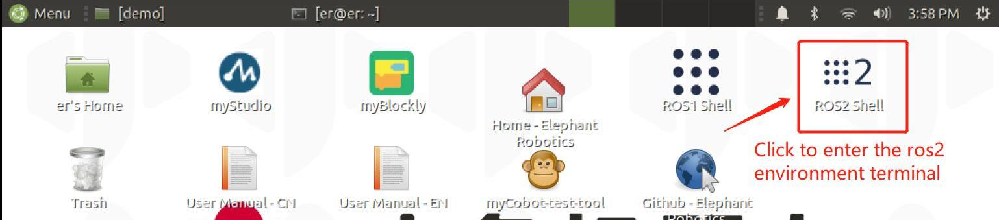
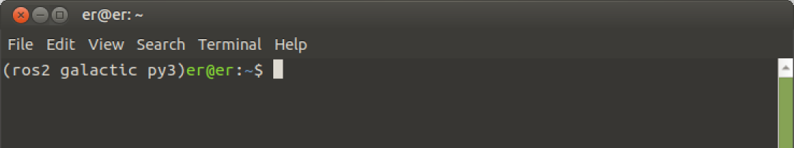

A brief introduction and use of rviz2
rviz is a three-dimensional visualization platform in ROS. On the one hand, it can realize the graphical display of external information. On the other hand, it can also release control information to objects through rviz, thereby realizing the monitoring and control of robots.
Introduction to rviz2
The successful installation of ros2 indicates that rviz2 is also successfully installed, because the installation of ros2 includes rviz2.
Open a new terminal (shortcut Ctrl+Alt+T) and enter the command to open rviz2
rviz2
Open rviz2 and the following interface will be displayed:

Introduction to each area
On the left is the display list. The display is something that draws something in the 3D world and may have some options available in the display list.
Above is the toolbar, which allows the user to select multiple functions with various function keys
The middle part is the 3D view: it is the main screen for viewing various data in three dimensions. The background color, fixed frame, grid, etc. of the 3D view can be set in detail in the Global Options and Grid items displayed on the left.
- Below is the time display area, including system time and ROS time.
- On the right is the observation angle setting area, where different observation angles can be set.
In this section, we only give a rough introduction. If you want to know more details, you can go to the User Guide to check it out.
mycobot_ros2 installation and update
- PI /JN version (Ubuntu 20.04):
mycobot_ros2 is a ROS package launched by ElephantRobotics that is compatible with various types of desktop robotic arms.
Project address: https://github.com/elephantrobotics/mycobot_ros2
The official default workspace is colcon_ws.
Click the ROS2 Shell icon on the desktop or the corresponding icon in the bar below the desktop to open the ROS2 environment terminal:


Then enter the following command:
cd ~/colcon_ws/src # Enter the src folder in the workspace
# Clone the code on github
git clone https://github.com/elephantrobotics/mycobot_ros2.git
cd .. # Return to the workspace
colcon build --symlink-install # Build the code in the workspace, --symlink-install: Avoid recompiling every time you adjust the python script
source install/setup.bash # Add environment variables
Note: If /home/er/colcon_ws/src (equivalent to ~/colcon_ws/src) directory, you need to delete the original mycobot_ros2 first, and then execute the above command.
Simple use
Start through the launch.py file
This example is based on the fact that you have completed Environment Setup and successfully copied the company's code from GitHub.
Open a console terminal (shortcut key Ctrl+Alt+T) Enter the following command to ROS2 environment configuration.
cd ~/colcon_ws
colcon build --symlink-install
source install/setup.bash
Enter again:
- mycobot 280 version:
ros2 launch mycobot_280 test.launch.py

Open rviz2 and get the following result:

If you want to learn more about rviz, you can go to the official document to view it
280 series rviz user guide
Robot arm control
Slider control
Open a command line and run:
- mycobot 280-JetsonNano version:
Click the ROS2 Shell icon on the desktop or the corresponding icon in the bar below the desktop to open the ROS2 environment terminal:
Then run the command:
# mycobot 280-JetsonNano version default serial port name is "/dev/ttyTHS1", baud rate is 1000000.
ros2 launch mycobot_280jn slider_control.launch.py
It will open rviz and a slider component, and you will see the following screen (the screen of the Raspberry Pi version is slightly different, which does not affect the use):

Then you can control the movement of the model in rviz by dragging the slider. The real mycobot will move with it.
Please note: Since the robot arm will move to the current position of the model when the command is entered, please make sure that the model in rviz does not appear to be through the model before you use the command Do not drag the slider quickly after connecting the robot arm to prevent damage to the robot arm
Model following
In addition to the above control, we can also let the model follow the movement of the real robot arm. Open a command line and run:
2 Slider control
Note: This function only supports the control of the robot
Open a command line and run:
- mycobot 280-JN version:
Click the ROS2 Shell icon on the desktop or the corresponding icon in the bar below the desktop to open the ROS2 environment terminal:
Then run the command:
# The default serial port name of mycobot 280-JetsonNano version is "/dev/ttyTHS1" and the baud rate is 1000000.
ros2 launch mycobot_280jn mycobot_follow.launch.py
It will open rviz and a slider component, and you will see the following screen (the screen of the Raspberry Pi version is slightly different, which does not affect the use):

Then you can control the model movement in rviz by dragging the slider. The real mycobot will move with it.
Please note: Since the robot arm will move to the current position of the model when the command is input, please make sure that the model in rviz does not appear to be through the model before you use the command
Do not drag the slider quickly after connecting the robot arm to prevent damage to the robot arm
3 GUI control
Based on the previous, this package also provides a simple Gui control interface. This method is intended to allow real robotic arms to interact with each other. Please connect mycobot.
Open the command line:
- mycobot 280-JetsonNano version:
Click the ROS2 Shell icon on the desktop or the corresponding icon in the bar below the desktop to open the ROS2 environment terminal:
Then run the command:
# The default serial port name of mycobot 280-JetsonNano version is "/dev/ttyTHS1" and the baud rate is 1000000.
ros2 launch mycobot_280jn simple_gui.launch.py

4 Keyboard control
Keyboard control function has been added to the mycobot_280 package, and it is synchronized in real time in rviz. This function relies on pythonApi, so make sure it is connected to the real robot arm.
Open a command line and run:
- mycobot 280-JetsonNano version:
Click the ROS2 Shell icon on the desktop or the corresponding icon in the bar below the desktop to open the ROS2 environment terminal:
Then run the command:
[INFO] [launch]: All log files can be found below /home/elephant/.ros/log/2022-05-19-16-25-45-949761-elephant-virtual-machine-19111
[INFO] [launch]: Default logging verbosity is set to INFO
[INFO] [robot_state_publisher-1]: process started with pid [19114]
[INFO] [rviz2-2]: process started with pid [19116]
[INFO] [follow_display-3]: process started with pid [19118]
[robot_state_publisher-1] Parsing robot urdf xml string.
[robot_state_publisher-1] Link joint2 had 1 children
[robot_state_publisher-1] Link joint3 had 1 children
[robot_state_publisher-1] Link joint4 had 1 children
[robot_state_publisher-1] Link joint5 had 1 children
[robot_state_publisher-1] Link joint6 had 1 children
[robot_state_publisher-1] Link joint6_flange had 0 children
[robot_state_publisher-1] [INFO] [1652948746.290904045] [robot_state_publisher]: got segment joint1
[robot_state_publisher-1] [INFO] [1652948746.290967253] [robot_state_publisher]: got segment joint2
[robot_state_publisher-1] [INFO] [1652948746.290973124] [robot_state_publisher]: got segment joint3
[robot_state_publisher-1] [INFO] [1652948746.290977490] [robot_state_publisher]: got segment joint4
[robot_state_publisher-1] [INFO] [1652948746.290981670] [robot_state_publisher]: got segment joint5
[robot_state_publisher-1] [INFO] [1652948746.290985737] [robot_state_publisher]: got segment joint6
[robot_state_publisher-1] [INFO] [1652948746.290989943] [robot_state_publisher]: got segment joint6_flange
[follow_display-3] [INFO] [1652948746.664601707] [follow_display]: port:/dev/ttyUSB0, baud:115200
[rviz2-2] [INFO] [1652948746.828773551] [rviz2]: Stereo is NOT SUPPORTED
[rviz2-2] [INFO] [1652948746.830452458] [rviz2]: OpenGl version: 4.1 (GLSL 4.1)
[rviz2-2] [INFO] [1652948746.874021926] [rviz2]: Stereo is NOT SUPPORTED
[rviz2-2] Parsing robot urdf xml string.
# The default serial port name of mycobot 280-JetsonNano version is "/dev/ttyTHS1", and the baud rate is 1000000.
ros2 launch mycobot_280jn teleop_keyboard.launch.py
The running effect is as follows:
 Mycobot information will be output on the command line, as follows:
Mycobot information will be output on the command line, as follows:
```bash [INFO] [launch]: All log files can be found below /home/elephant/.ros/log/2022-05-19-16-25-45-949761-elephant-virtual-machine-19111 [INFO] [launch]: Default logging verbosity is set to INFO [INFO] [robot_state _publisher-1]: process started with pid [19114] [INFO] [rviz2-2]: process started with pid [19116] [INFO] [follow_display-3]: process started with pid [19118] [robot_state_publisher-1] Parsing robot urdf XML string. children [robot_state_publisher-1] Link joint3 had 1 children [robot_state_publisher-1] Link joint4 had 1 children [robot_state_publisher-1] Link joint5 had 1 children [robot_state_publisher-1] Link joint6 had 1 children [robot_state_publisher-1] Link joint6_flange had 0 children [robot_state_publisher-1] [INFO] [ 1652948746.290904045] [robot_state_publisher]: got segment joint1 [robot_state_publisher-1] [INFO] [1652948746.290967253] [robot_state_publisher]: got segment joint2 [robot_state_publisher-1] [INFO] [1652948746.290973124] [robot_state_publisher]: got segment joint3 [robot_state_publisher-1] [INFO] [1652948746.290977490] [robot_state_publisher]: got segment joint4 [robot_state_publisher-1] [INFO] [1652948746.2 90981670] [robot_state_publisher]: got segment joint5 [robot_state_publisher-1] [INFO] [1652948746.290985737] [robot_state_publisher]: got segment joint6 [robot_state_publisher-1] [INFO] [1652948746.290989943] [robot_state_publisher]: got segment joint6_flange [follow_display-3] [INFO] [1652948746.664601707] [follow_display]: port:/dev/ttyUSB0, baud:115200 [rviz2-2] [INFO] [1652948746.828773551] [rviz2]: Stereo is NOT SUPPORTED [rviz2-2] [INFO] [1652948746.830452458] [rviz2]: OpenGl version: 4.1 (GLSL 4.1) [rviz2-2] [INFO] [1652948746.874021926] [rviz2]: Stereo is NOT SUPPORTED [rviz2-2] Parsing robot urdf xml string.
- mycobot 280-JetsonNano version:
Click the `ROS2 Shell` icon on the desktop or the corresponding icon in the bar below the desktop to open the ROS2 environment terminal:
<img src =../../../../../resource\3-FunctionsAndApplications\6.developmentGuide\ROS\12.2-ROS2\rviz2/12.2.7-101.jpg
width ="500" align = "center">
<img src =../../../../../resource\3-FunctionsAndApplications\6.developmentGuide\ROS\12.2-ROS2\rviz2/12.2.7-112.jpg
width ="500" align = "center">
<img src =../../../../../resource\3-FunctionsAndApplications\6.developmentGuide\ROS\12.2-ROS2\rviz2/12.2.7-12.png
width ="500" align = "center">
Then run the command:
```bash
ros2 run mycobot_280jn teleop_keyboard
You will see the following output in the command line:
Mycobot Teleop Keyboard Controller
---------------------------
Movimg options(control coordinations [x,y,z,rx,ry,rz]):
w(x+)
a(y-) s(x-) d(y+)
z(z-) x(z+)
u(rx+) i(ry+) o(rz+)
j(rx-) k(ry-) l(rz-)
Gripper control:
g - open
h - close
Other:
1 - Go to init pose
2 - Go to home pose
3 - Resave home pose
q - Quit
currently: speed: 10 change percent: 2
In this terminal, you can control the state of the robot and move the robot by pressing keys in the command line.